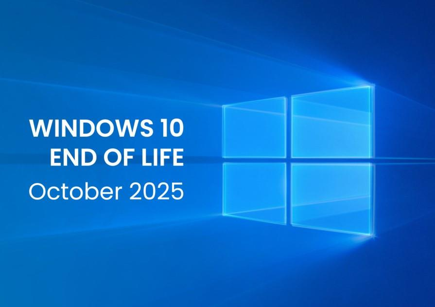
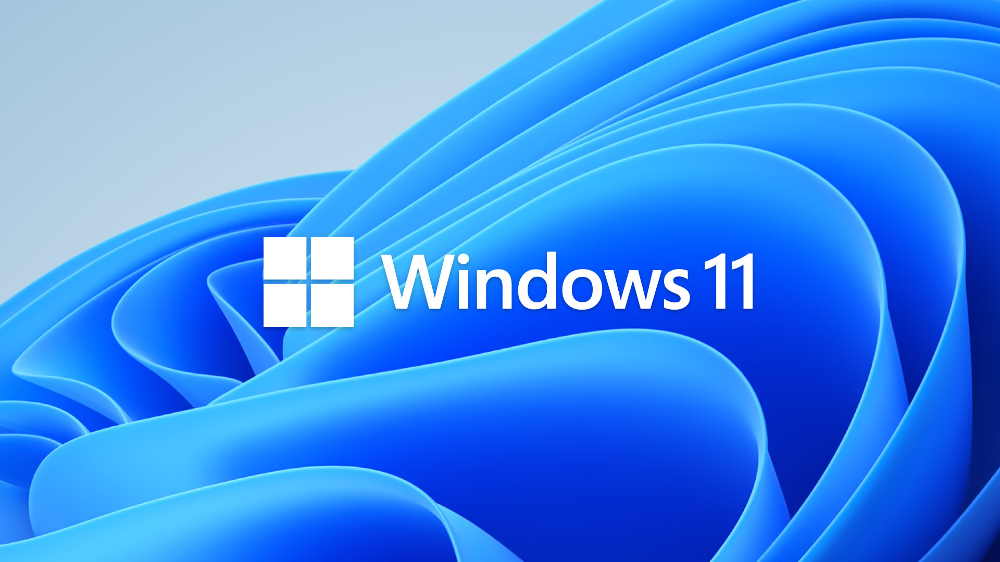

Published by Oleander Solutions | IT & Business Technology Experts

Released in July 2015, Windows 10 became one of Microsoft's most widely used operating systems, offering a familiar desktop environment, continuous updates, and enterprise-friendly features. Over the years, it has powered millions of PCs worldwide in homes and businesses, supporting productivity, gaming, and creative workflows.
Microsoft announced the end of support for Windows 10 for October 14, 2025. After this date, security updates and technical support will no longer be available, making it crucial for businesses and users to plan migration to Windows 11 or other supported platforms.

Windows 11 was officially launched in October 2021 with a modernized interface, productivity enhancements, and security improvements. The operating system emphasizes a clean, centered Start menu, integrated Microsoft Teams, Snap Layouts for multitasking, and better support for hybrid work environments.
Adoption of Windows 11 has steadily increased, especially in businesses prioritizing security, remote collaboration, and up-to-date software ecosystems. The OS also introduces stricter hardware requirements, such as TPM 2.0 and secure boot, ensuring enhanced protection against cyber threats.
Transitioning from Windows 10 to Windows 11 requires careful planning to ensure continuity and minimal disruption. Consider the following steps:
Upgrading to Windows 11 ensures long-term support, access to the latest features, improved security, and better performance for modern hardware. It also provides tools designed for hybrid work, remote collaboration, and productivity optimization.
The end of Windows 10 marks a significant shift in the Windows ecosystem. Transitioning to Windows 11 is essential for security, compliance, and efficiency. By planning carefully, backing up data, and leveraging new features, businesses and individuals can enjoy a smoother, safer, and more productive computing experience.
Contact Oleander Solutions for expert guidance on planning, migration, and support to ensure your transition from Windows 10 to Windows 11 is seamless and secure.
Get IT Support Today